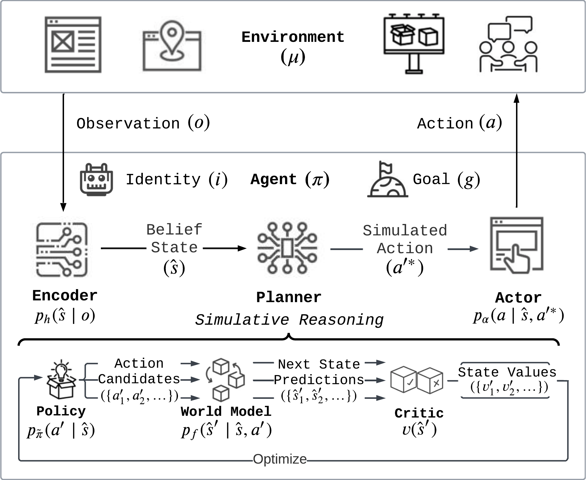
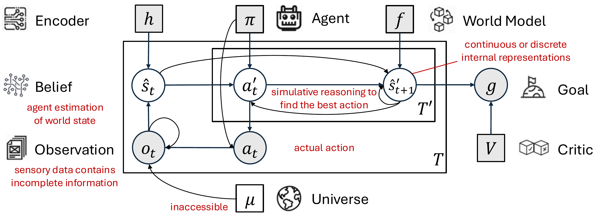
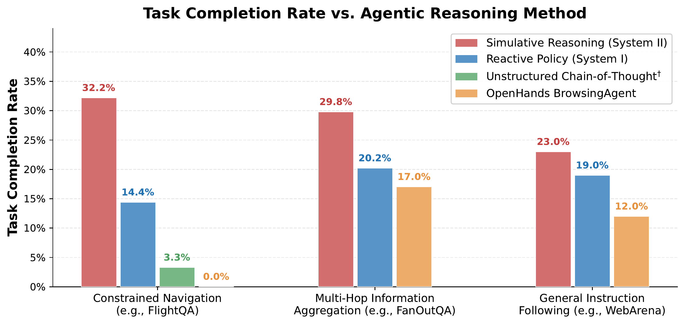
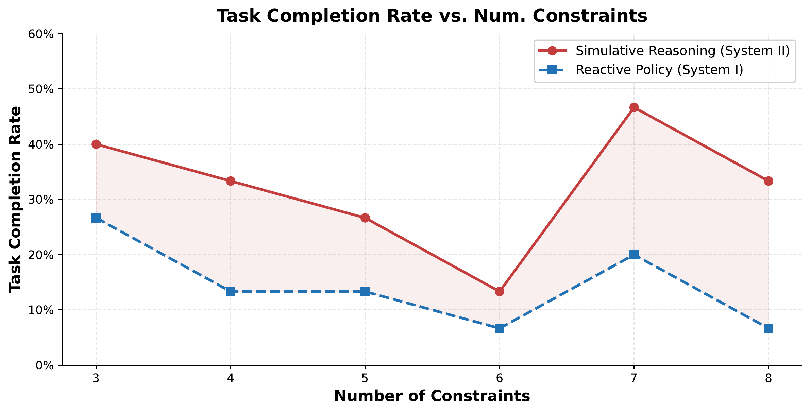

* Co-First Authors
1 Institute of Foundation Models 2 Carnegie Mellon University 3 UC San Diego
Today's agentic systems — prompted workflows, end-to-end policies, even reasoning LLMs like o1 and o3-mini — pick the next action reactively, with at most undifferentiated chain-of-thought. We argue that simulative reasoning — the ability to internally model future states resulting from candidate actions, evaluate their consequences, and select behavior grounded in these predictions — is a more general planning mechanism that, by operating through a world model rather than memorized responses, transfers across tasks without per-environment re-engineering.
We instantiate this idea as SiRA (Simulative Reasoning Architecture), a goal-oriented, model-agnostic architecture that realizes simulative reasoning via an LLM-based world model over natural-language belief states. Evaluated as a web-browsing agent, simulative reasoning delivers up to 124% higher task completion than a matched reactive baseline and raises constrained-navigation success from 0% to 32.2%, with the advantage persisting across three qualitatively distinct task categories.

SiRA at each step: the encoder maps the observation into a natural-language belief state; the planner proposes candidate actions, simulates their consequences via the world model, and evaluates goal progress via the critic; the best simulated action is then grounded by the actor as a concrete environment command.
What does it mean to plan? How should an intelligent agent reason about its actions for decision-making across diverse tasks and environments?
Current agentic systems, whether built on scaffolded workflows or end-to-end trained policies, predominantly rely on reactive decision-making: selecting the next action using a fixed procedure (e.g., neural network, workflow), with at most undifferentiated adaptive computation (e.g., chain-of-thought) that lacks explicit modeling of future outcomes. This reactive paradigm limits generalizability, as each new task or environment demands re-engineering rather than transfer of a shared reasoning capacity.
Humans, by contrast, plan by mentally simulating the consequences of candidate actions within an internal model of the world, a capacity known as simulative reasoning (System II) that supports flexible, goal-directed behavior across diverse contexts. In this paper, we argue that simulative reasoning through a world model provides a general-purpose planning mechanism for agentic systems, improving upon reactive policies (System I) by grounding decisions in predicted future states rather than pattern-matched responses.
To verify this hypothesis, we introduce SiRA (Simulative Reasoning Architecture), a goal-oriented architecture that instantiates simulative reasoning using an LLM-based world model with natural-language belief states, while remaining model-agnostic in design. We evaluate across three qualitatively distinct task categories: constrained navigation, multi-hop information aggregation, and general instruction following, instantiated in a web-browser environment.
Across all categories, simulative reasoning achieves up to 124% higher task completion rates than a matched reactive baseline, and increases the success rate on constrained navigation from 0% to 32.2% compared to a representative open-web agent. The persistent advantage across distinct task types suggests that the benefit stems from generalizable counterfactual evaluation rather than task-specific tuning. We release the web-browsing agent built on SiRA as an open-source research artifact.
Where reactive policies pattern-match the next action from the current observation, simulative reasoning is the ability to internally model future states resulting from candidate actions, evaluate their consequences, and select behavior grounded in these predictions. SiRA realizes this with three modules: an encoder that produces a natural-language belief state, a planner (policy + world model + critic) that simulates candidate futures and scores them against the goal, and an actor that grounds the chosen abstract action into an environment command.
Perception
Encoder
Maps the raw observation ot into a discrete natural-language belief state ŝt, factoring perception into concept-level components that are robust to noise.
Simulative Reasoning
Planner with World Model
A policy samples candidate abstract actions; the world model predicts each next state; the critic scores goal progress. Tree search returns the most promising next action.
Acting
Actor
Translates the selected abstract intention into a concrete, environment-specific action, with access to the raw observation for grounding.

The world model lets the agent simulate consequences without a ground-truth environment. SiRA separates abstract simulated actions at′ used for planning from concrete actions at executed in the environment, enabling transfer and hierarchical planning.
SiRA is model-agnostic; for our experiments we realize it as a web-browsing agent. Three design choices shape how it works in practice.
Simulative Reasoning with a World Model
Instead of committing to the first sampled action, SiRA simulates the consequences of multiple candidates and commits to the one with the highest expected progress. The architecture is model-agnostic; here we use a pretrained LLM as the world model, predicting in natural-language belief space — repurposing the next-token-prediction objective LLMs already excel at for general-purpose simulation, without per-environment training.
Concept-Based Belief States
The encoder LLM summarizes the page's accessibility tree into a discrete natural-language belief, appended to a selective memory of past summaries and chosen actions — reducing hallucination over noisy continuous embeddings.
Hierarchical Planning
Policy and world model reason over abstract intentions in natural language (e.g. “refine search to direct flights”); the actor translates the chosen intention into a concrete browser command — improving transfer and reducing error accumulation.
LLM Modules
Encoder h, policy π̃, world model f, critic v, and actor α are each implemented by prompting a pretrained LLM (gpt-4o in our experiments).
Planning & Search
DFS via LLM Reasoners with M = N = 20 samples per step and planning horizon T′ = t+1; each episode runs up to 30 actions.
We test whether simulative reasoning provides a generalizable advantage across three qualitatively distinct web-browser task categories.
Constrained Navigation
0% → 32.2%
SiRA improves task accuracy from 0% (OpenHands BrowsingAgent) to 32.2%, a +124% gain over the matched reactive baseline (14.4%). o1 and o3-mini as planners reach only 1.1%/3.3% — scaling internal compute does not substitute for explicit simulation.
Multi-Hop Aggregation
17.0% → 29.8%
SiRA reaches 29.8% accuracy vs. 20.2% for the reactive baseline (+48.6%, p < 0.05) and 17.0% for BrowsingAgent. Response rate rises from 37% to 55% as repeated and erroneous actions drop sharply.
General Instruction Following
12.0% → 23.0%
On a 100-task WebArena subset, SiRA achieves 23.0% success vs. 19.0% reactive (+21.1%) and 12.0% BrowsingAgent (+91.7%) — the simulative-reasoning advantage persists across the broadest, most heterogeneous task type.

Task completion rate by reasoning method across the three task categories. Simulative reasoning (System II) consistently outperforms both the matched reactive policy (System I) and a representative open-web agent, with up to 124% relative improvement.
Compositional Robustness
On FlightQA we vary the number of user constraints from 3 to 8. Simulative reasoning maintains a consistent advantage over the reactive baseline at every complexity level, indicating that the benefit comes from generalizable counterfactual evaluation rather than memorized task-specific patterns.

Completion rate as a function of constraint count on FlightQA. The persistent gap between simulative reasoning (System II) and the reactive policy (System I) holds as compositional complexity increases.
If you find this work useful, please cite:
@misc{deng2025sira,
title = {General Agentic Planning through Simulative
Reasoning with World Models},
author = {Deng, Mingkai and Hou, Jinyu and
Hu, Zhiting and Xing, Eric P.},
year = {2025},
eprint = {2507.23773},
archivePrefix = {arXiv},
url = {https://arxiv.org/abs/2507.23773}
}